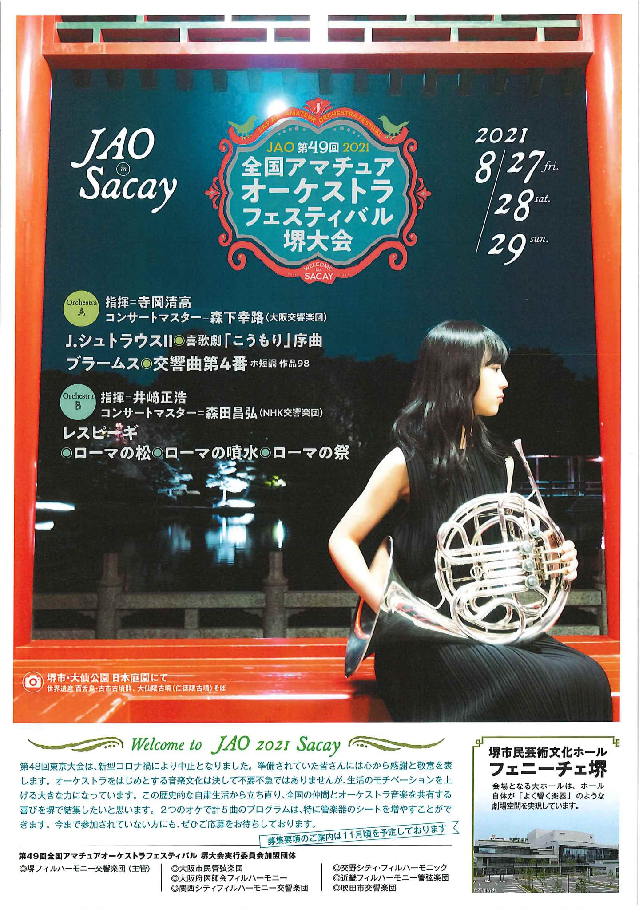

"2020 World Amateur Orchestra Festival in Tokyo"
2020世界アマチュアオーケストラフェスティバルin Tokyo
（第48回全国アマチュアオーケストラフェスティバル東京大会）
◆チケット発売中！【チケット情報ページはこちらから】

◆チラシのPDFデータはこちらからダウンロードできます
日 時：2020（令和２）年６月５日（金）～７日（日）
会 場：東京芸術劇場
演奏会：2020（令和２）年６月７日（日）13：30開演（13：00開場）
東京芸術劇場コンサートホール
【オーケストラＡ】
指揮：田部井 剛
コンサートマスター：佐久間 聡一（広島交響楽団第１コンサートマスター）
曲目：D.ショスタコーヴィチ 『祝典序曲』
L.ヤナーチェク 『シンフォニエッタ』
【オーケストラＢ】
指揮：山下 一史
コンサートマスター：大宮 臨太郎（NHK交響楽団フォアシュピーラー）
曲目：G.マーラー 『交響曲第5番 嬰ハ短調（2002年版）』
【オーケストラＴ】「ＪＡＯ東京オーケストラ」
指揮：石川 星太郎
コンサートマスター：佐久間 聡一（広島交響楽団第１コンサートマスター）
曲目：塩見 康史 『シンフォニエッタ《ミレニアム・プレリュード》』（委嘱作品）
【特別出演：さくらこまち和楽団】（一社）日本伝統芸能国際交流協会
【JAO東京実行委員会加盟団体（以下五十音順）】
アンサンブル・グリューネ、俊友会管弦楽団、八王子フィルハーモニー管弦楽団
フィルハーモニックアンサンブル管弦楽団、丸の内交響楽団、
モーツァルトアンサンブルオーケストラ、ワグネル・ソサィエティー・OBオーケストラ

2020年6月5日(金)～7日(日)
会場：東京芸術劇場 演奏会：2020年6月7日(日)